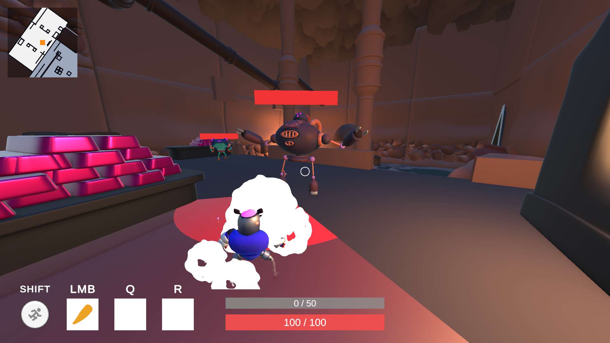
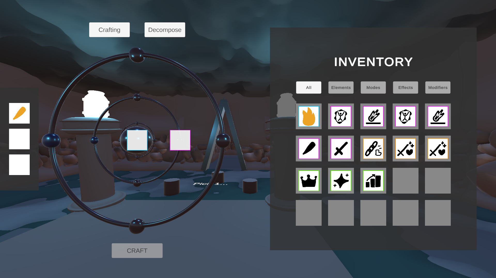
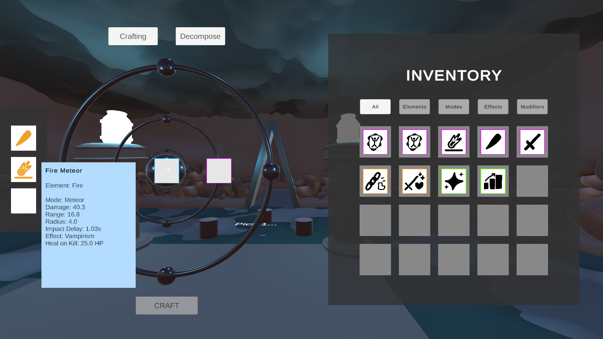
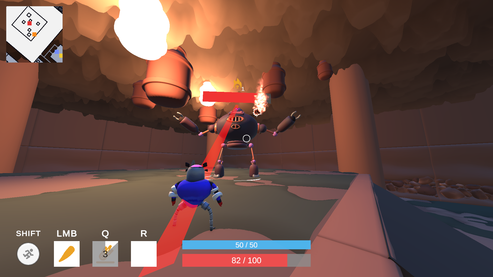
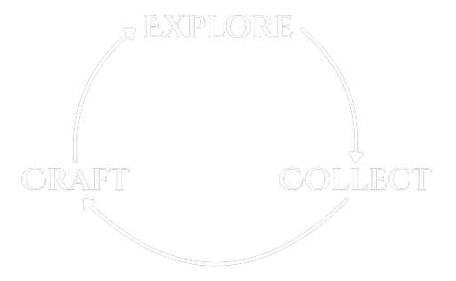
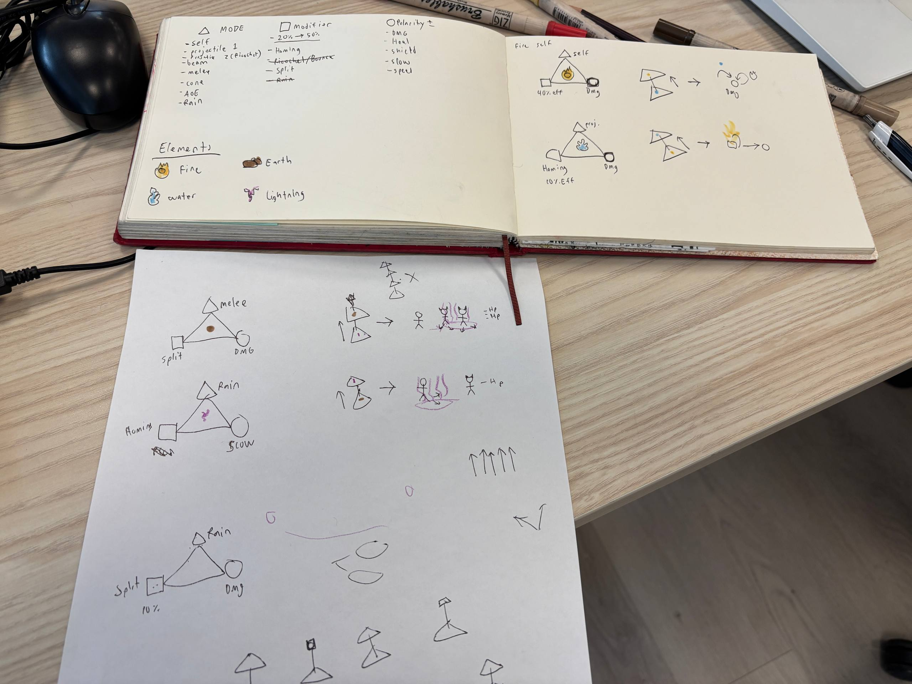

01
Game design
Turn player-facing goals into mechanics, systems, encounters, and readable moment-to-moment decisions.
- Gameplay & systems design
- Mechanic and level prototyping
- Playtesting, tuning & iteration
GAME DESIGN · UNITY DEVELOPMENT · PRODUCTION
Game Designer + Unity Developer
I design gameplay systems, prototype mechanics, and build playable experiences. I care about the decisions players make, and the iterations it takes to make those decisions feel great.
HOW I CONTRIBUTE
My strongest work sits between design and implementation: defining how a game should feel, building the systems behind it, and helping a team get it shipped.
Turn player-facing goals into mechanics, systems, encounters, and readable moment-to-moment decisions.
Prototype and implement gameplay directly, keeping design intent connected to the realities of the build.
Help multidisciplinary teams make decisions, manage scope, and maintain momentum toward a playable result.
Unity · C# · Gameplay prototyping · Systems design · Technical design · Playtesting · Production planning
A LITTLE ABOUT ME
I am a User Experience and Game Design student at DigiPen Institute of Technology Singapore. I enjoy working where design meets implementation: breaking down a player problem, building a prototype in Unity, and refining it until the interaction makes sense in the hands of a player.
Games such as Pokémon, Halo, Warframe, and League of Legends shaped my interest in the systems beneath the surface. I like understanding how mechanics connect, how player choices create different experiences, and how a small change can affect the rhythm of an entire game.
Across team projects, I have worked as a Design Lead, Technical & Gameplay Designer, Team Lead, Product Manager, and solo developer. Those roles taught me to move between creative direction, hands-on problem-solving, and the practical work of getting a team to the finish line.

PROJECT SHOWCASE
Each project showcase focuses on the decisions behind the build: the player problem, the constraint, what the team learned, and what changed as a result.
Open a project to explore the process
LET'S BUILD SOMETHING TOGETHER!
I am interested in opportunities across game design and Unity development, as well as roles where technical understanding and production coordination help a team deliver better games.
FLAGSHIP PROJECT · 2D STEALTH


THE PLAYER EXPERIENCE
Soot & Scoot is a top-down stealth game about guiding rescued Friends through a dangerous household. The larger the group becomes, the harder it is to stay hidden. The core loop is Observe → Plan → Execute.
01 / FRAMING THE EXPERIENCE
The game's tension came from a deliberate trade-off: rescuing more Friends made the group more vulnerable. For that trade-off to feel fair, players needed to spot threats, read the space, and choose when to move.
My design focus was to protect the Observe → Plan → Execute loop. If a Roomba appeared only after the player had already committed to a route, the encounter stopped feeling like stealth and started feeling like an unavoidable surprise.
02 / WORKING WITHIN THE CONSTRAINTS
The six-month project required a custom game engine. As the only designer working alongside six programmers and one artist, I had to keep the intended player experience clear while adapting mechanics and level plans to the engine's capabilities.
I used a simple impact-versus-complexity lens to help prioritise work. Systems central to the stealth loop, such as line of sight and enemy AI, needed attention before lower-impact polish such as particle effects.
As Product Manager, I also delegated tasks, tracked deadlines and deliverables, monitored scope, and coordinated with programming and art so implementation stayed aligned with the design goals.
03 / FINDING WHAT WAS FAILING
Playtesting surfaced a recurring problem: players were frequently caught off-guard by roaming Roombas. The result was frustration and deaths that felt unfair. The original camera was too zoomed in, limiting how much of the level players could inspect at once.

04 / CHANGING THE SYSTEM
I widened the camera view and redesigned level sections around what the player could see on screen. This gave players more opportunity to observe a space before acting and made the level layout support the intended stealth loop.

The important lesson was that the camera was not an isolated presentation setting. It was part of the stealth system: visibility affected planning, and planning affected whether a failure felt deserved. After the changes, playtesting revealed:
GAMEPLAY SYSTEMS DESIGN · 3D ACTION ROGUELIKE




THE PLAYER EXPERIENCE
Spellwright is a 3D third-person action roguelike where players find randomized spell components and combine them into spells for combat. Instead of only receiving complete weapons or abilities, players shape their own builds from the ingredients a run provides.
01 / DEFINING THE EXPERIENCE
The first design question was not simply how to combine spell parts, but why players should be doing it. I wanted each run to ask: “Given what RNG has given me, what build can I create?” The goal was to give players authorship over their build while preserving the uncertainty that makes a roguelike run feel different.
That direction also addressed a practical content constraint. Building a large catalogue of complete spells is expensive; a modular system lets a smaller set of components combine into a wider range of player-created outcomes. The player would shape individual spells, then decide how those spells work together in a loadout.
I also proposed elemental reactions to make that loadout matter. For example, applying Fire and Water effects to the same enemy could create a lingering steam cloud, giving players a reason to combine complementary elements rather than treating each spell as an isolated damage option.
To achieve this experience, I needed to define the gameplay loop that players will be interacting with as they progress through the game, and eventually landed on this:

02 / TESTING THE RULES ON PAPER
The initial pitch used an Element, a Shape, and optional modifiers such as damage and range. That model worked for straightforward offensive spells, but broke down when I tried to represent defensive and utility abilities: a damage modifier or projectile shape did not make sense for every possible spell.
I then explored a broader set of categories: Element, Mode, Modifier and Polarity, and a spell-chaining idea inspired by research into procedural spell crafting. Paper examples exposed the same weakness: Homing and Split did not work with every Mode, while a universal effectiveness stat could not be balanced consistently across damage, healing and shielding. Projectile speed and lifetime also had no meaning for modes that did not use projectiles.
The ordered execution required by spell chaining also felt poorly suited to the game's faster action pace. Both early paper-prototype passes exposed too many exceptions for the system to feel robust, so I moved the idea into a Unity prototype to test the architecture more concretely.

03 / TURNING THE MODEL INTO A UNITY PROTOTYPE
I started by implementing projectile crafting with different Elements. Building the system in Unity turned abstract rules into concrete data and revealed a cleaner way to handle randomized stats: stats should live on the component they describe.
The first direction placed values on the component they describe. For example, projectile speed and lifetime on Projectile Mode, and cone angle on Cone Mode, instead of forcing one universal stat across damage, healing and shielding. In the next design pass, I refined what “Effect” meant: rather than defining an entire healing or shielding spell, it would add a secondary behaviour to an otherwise offensive spell.
The same principle resolved the global modifier problem. Rather than making Homing or Split compatible with every Mode, I moved behaviour changes onto the Modes where they make sense. A Projectile could roll Homing or Split, while a Cone could have its own angle-related modifiers.
This changed the old Modifier category into a token system. I also proposed common and rare token pools: common tokens would focus on simpler stat changes, while rarer tokens could target behavioural changes. It was a trade-off: Players would have less direct control over which behaviour appears, but the system would have fewer invalid combinations.
04 / REFINING THE PLAYER'S AGENCY
Healing exposed another weakness. A spell that only healed felt awkward in a single-player action game, and a healing beam raised questions about what should happen when it hit an enemy. I considered moving healing entirely to pickups, but chose a more flexible direction: Effects could add benefits to an offensive spell, such as healing the player on hit, speeding them up on cast, or slowing the target.
This kept healing available without making it an entire spell category that could distort the game's health economy. It also preserved more player choice than removing healing from the spell system altogether. Spell chaining was moved to the back seat while these more fundamental rules were resolved.
Later, I connected spell crafting back to the intended combat experience: different Modes should create distinct trade-offs in range, coverage and elemental application rate, while elemental stacks and reactions should make loadout choices interact. A Projectile, Cone and Beam should not merely be different-looking ways to deal damage, but fuel a different gameplay experience based on the player's preference.
Finally, as the core crafting system took shape, two pieces of feedback were constantly getting brought up as first-time players tried the prototype, which are still being validated in current development.
As development of Spellwright continues, these two risks have been helpful in informing my decisions for UI design in lessening a player's cognitive load, and the general flow for minute-to-minute gameplay to achieve a seamless experience.
PUZZLE DESIGN · GAME JAM · 4TH OF 25


THE PLAYER EXPERIENCE
Groovity is a 3D puzzle platformer built around the Polarity Oscillation Gizmo (P.O.G), which lets players polarise objects and use attraction and repulsion to navigate each level. The project placed 4th out of 25 games in the one-week Century Games Game Jam.
01 / DEFINING THE DESIGN PROMISE
The jam theme was “Puzzle”. We chose a 3D physics-driven direction to explore the space and learn more about the 3D development pipeline. Early ideas included a Rube Goldberg simulator, a traffic-control game, and a platformer built around magnetic poles.
We selected the polarity-based platformer because attraction and repulsion could create a clear central verb with room for different interactions. The concept later shifted toward a colourful, space-inspired presentation, and the magnetism idea became the game's gravity-focused identity.

02 / SETTING THE SCOPE
Learning from a previous jam, I proposed spending a full day on ideation and planning. The minimum playable target was one tutorial level and three puzzle levels. That target was intended to fit the one-week schedule while giving the team a complete mechanic to build around.
We were less experienced with puzzle games and 3D level design. During level planning, we debated whether to build a gradual progression or make the most difficult levels possible to demonstrate the full potential of the mechanic. We chose the latter.
03 / LISTENING TO THE FAILURE
During judging and playtesting, the recurring feedback was that the game was too difficult to understand. Many players became stuck in the first level. The extensive control scheme and the jump from the tutorial into highly challenging puzzles overloaded players before they had built a mental model of the mechanic.
The issue was not simply that the puzzles were hard. We had not created a progression that taught the player what the system could do before asking them to combine its possibilities. The decision to showcase the mechanic's ceiling worked against the experience of learning it.
04 / WHAT I WOULD CHANGE
We did not complete a full progression redesign during the jam, so I would not present that as a shipped change. The feedback changed how I would approach the next pass: introduce one interaction at a time, let players practise it in a manageable space, then combine previously learned interactions in later puzzles.
I would also keep the control scheme visible in the UI, and test whether players understand the available actions before increasing puzzle complexity. The goal would be to measure learning and comprehension, not just whether a puzzle can technically be solved.
TECHNICAL GAMEPLAY DESIGN · 2D ENDLESS RUNNER


THE PLAYER EXPERIENCE
Toxic Tide is a 2D side-scrolling endless runner. Players swing through a hazardous laboratory with a grappling hook, collect gears, and upgrade their equipment while staying ahead of a wall of toxic gas.
01 / DEFINING THE FEEL
The grappling hook was the game's defining traversal mechanic. It needed to feel fast, responsive, and satisfying. A rope that simply drew a line between the player and an anchor would communicate attachment, but would not make the environment feel meaningfully involved.
My responsibilities covered the grappling hook, camera behaviour, audio integration, and game data management. I also coordinated task assignments, deadlines, and asset integration as Project Manager.
I owned the grappling hook system, camera behaviour, audio integration, and game data management, while also coordinating tasks and cross-discipline asset integration.
02 / PROTOTYPING THE SYSTEM
The first implementation used a fixed anchor. Through discussion and prototyping, I explored making the rope wrap around level geometry as the player swung. When the rope encountered an obstacle, the system could update its pivot point, allowing it to maintain tension and momentum around corners.

This made the rope feel more like a traversal system interacting with the level, rather than a decorative connection to a single point.
03 / TESTING THE EDGE CASE
We debated two options: keep the rope physically active while the player was grounded, applying tension, or disable grappling until the player was airborne. The first option was consistent with the rope simulation, but playtesting showed that the tension restricted movement at moments when the game needed to feel fast.
We also compared the fixed-anchor approach with environmental rope wrapping. A/B playtesting indicated that players found the wrapping system more intuitive and satisfying.

In one session, I used the same six playtesters to examine two separate questions: whether grounded rope tension interrupted movement, and whether environmental wrapping felt better than a fixed anchor.
Counts are shown instead of percentages because the sample was small. Treat the results as directional feedback, not statistical proof.
04 / ITERATE & IMPLEMENT
The final grounded behaviour allowed players to fire the hook and see the rope attach to a surface, but the rope did not apply force until the player left the ground. This preserved visual feedback without restricting grounded movement.

The resulting design favoured responsiveness where strict physical simulation got in the way of the intended arcade pacing. It was a deliberate compromise: remove the force that restricted movement, but retain the hook's visual attachment as feedback. The recorded playtest data describes the earlier comparisons; it does not establish a measured post-change improvement.
48-HOUR GAME JAM · SCOPE & SYSTEMS


THE PLAYER EXPERIENCE
Undivided is a roguelike where players switch between masks of life and death, shifting between ranged and melee combat while collecting relics that alter each run. It was made for Global Game Jam Singapore 2026, themed “Mask”.
01 / INTERPRETING THE THEME
We explored several interpretations of the theme, including a side-scroller with ability-changing masks, a multi-character mask system, and narrative concepts around identity and deception. We ultimately chose a roguelike built around two masks with distinct combat modes.
The player could switch between ranged and melee combat, making the theme part of the core loop rather than a cosmetic layer. This gave the two-person team a clear mechanic to focus on during the jam.
02 / SETTING A MINIMUM PLAYABLE TARGET
We were familiar with the genre, but a roguelike can quickly expand into a large content checklist: enemies, boss behaviour, items, combat depth, level variety, and replayability. To keep the project shippable, we set a minimum playable target before expanding.
After establishing that baseline, we used remaining time to add another enemy type, more items, and additional level variations. Keeping the mask-switching mechanic central helped us make content decisions against a clear design goal.
03 / RECOGNISING THE TRADE-OFF
Our familiarity with roguelikes made the concept feel safe, but that familiarity hid the amount of supporting content the genre requires. As we added enemies, items, and level variations, time for polish became increasingly limited.
The main failure signal was the gap between the amount of content we wanted and the time available to make each part feel finished. We completed the envisioned scope, but the final experience made it clear that a more mechanic-focused concept would have created more room to refine the core loop.
04 / BUILDING FOR REUSE
I structured combat behaviours and enemy logic to be modular, allowing us to iterate on variations more quickly and reuse components across different enemies and combat interactions. That modularity helped us add content within the jam window, although it could not replace the time needed for final polish.
For future jams, I would start with a mechanic-led concept and protect time for feel, clarity, and polish before expanding the content list. The experience also taught me to make decisions quickly, accept deliberate compromises, and keep moving toward a playable submission.